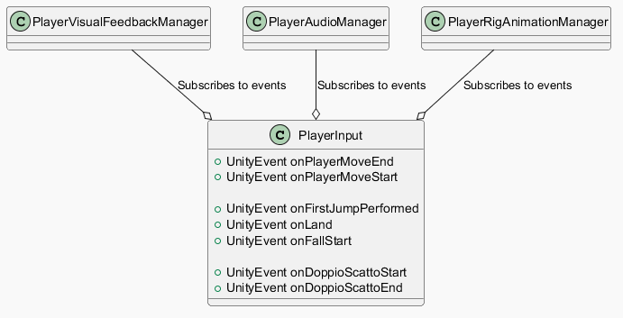
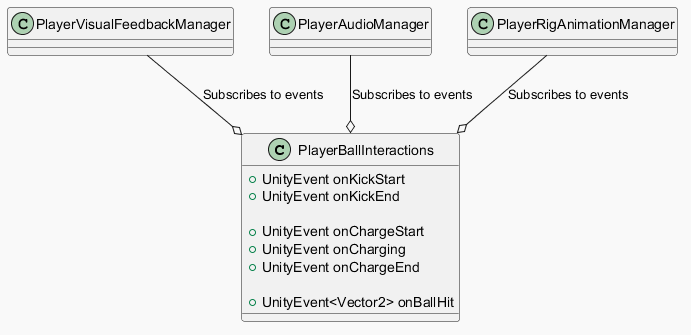
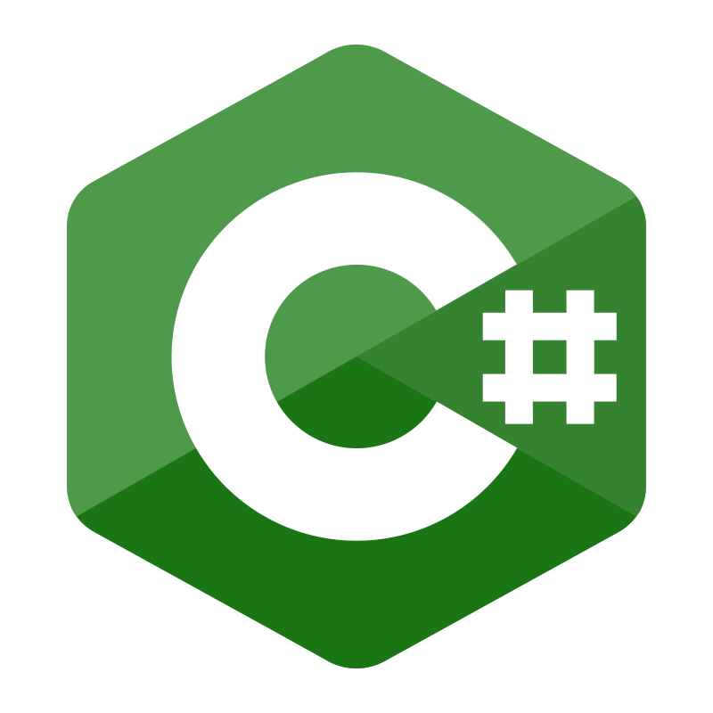

Sinossi
Gioco casual 1v1 dove l'unico obiettivo è segnare punti!
Anno
2026
Engine
Unity
Durata
3 Mesi
Team
1 (Solo Dev)
Alcuni asset in pixel art sono stati scaricati da itch.io, tutto il resto
è stato realizzato da me, dagli asset grafici agli script.
Il codice è stato scritto da me, non è stata sfruttata programmazione
agentica, anche se competente in quest'ambito. L'IA è stata utilizzata solo
per ricerca didattica è come strumento alternativo al browser, il problema
da risolvere non e stato buttato in una chat, compromettendo la mia
capacità di ragionamento.
Convenzioni di lettura
Le convenzioni di cui parlo riguardano l'inserimento di sezioni utili a capire certe domande che ci si pone leggendo. Ecco quali sono:
-
Sezione "❓WHY?": utile per avere una chiara comprensione del motivo per cui ho formulato una soluzione, dunque, spiega il mio ragionamento e del mio approccio alla risoluzione dei problemi.
-
Sezione "🧭 CONTEXT!": utile per capire il contesto che contiene i problemi preesistenti che richiedevano una soluzione.
-
Sezione "🛠️ HOW?": dalla teoria alla pratica, spiego come ho effettivamente realizzato una soluzione, magari il codice scritto e le procedure seguite.
L'ordine dei paragrafi non segue il REALE workflow del progetto, non partirò parlando di project scope e planning, poiché metterò in cima le sezioni di programmazione e problem solving, le quali vengono spiegate in modo tale da poter essere lette senza dover aver letto necessariamente il contenuto dell'intera pagina. Se trovare molte ripetizioni, questo è il motivo.
E' probabile che alcune sezioni siano incomplete, saranno aggiunte/aggiornate succcessivamente.
Introduzione
!TODO aggiungi video introduttivo
Rumble Smash è un progetto accademico, sviluppato per la Nautilus, il tempo di produzione effettivo ammonta a poco meno di 3 mesi.
Rumble Smash nasce dall'idea di divertire senza pretese, prendi il controller avvia una partita e vinci a suon di risate. Il suo gameplay rapido ed intuitivo inserisce in te dosi di adrenalina e divertimento, da sfruttare molto male nel dialogo con il proprio avversario. L'idea di Rumble Smash è di divertire attraverso la competizione col proprio rivale, una buona dose di riflessi e abilità col pad porteranno il giocatore a cavalcare la curva d'apprendimento domandano sempre di più alla loro tecnica, creando un meccanismo di competizione con sé stessi e con il proprio avversario, rendendo il perfezionamento della propria tecnica una delle variabili da cui il giocatore trae appagamento e soddisfazione.
La sua idea semplice nasconde delle sfide non indifferenti, da affrontare armandosi di tabelle e buoni principi di game design.
Programmazione & Problem Solving
In basso ad ogni sezione, se disponibili, troverete i diagrammi UML realizzati per comprendere il problema a priori e poi svilupparlo.
🧠 Approccio mentale
Prima di scrivere codice, ogni sistema complesso (Ball FSM, Player Jump/Dash, Sequencer) è stato modellato su diagrammi UML (stati, transizioni, sequence diagram per event flow). Questo ha permesso:
-
Identificare edge case prima dell'implementazione
-
Avere riferimento visivo durante debug
-
Tenere traccia della logica dell'architettura e delle problematiche identificate durante la fase di realizzazione degli UML in modo da:
-
Avere una visione coerente e facile da raggiungere dell'architettura, semplificando modifiche, aggiunte e comprensione generale.
-
Ridurre gli errori e le regressioni, prevenendo errori architetturali post creazione del codice, evitando spese di tempo non fruttifere.
-
Facilitare l'integrazione nella codebase di personale esterno (anche se ero solo xD).
-
Successivamente, ogni feature ideata è stata testata rapidamente in isolamento, tramite semplici prototipi, (es. AddForce math, dash physics) prima di integrare. Questo riduce regressioni e permette esperimenti rischiosi, dal punto di vista di game design, invece, mi permette di capire se l'idea sia divertente col pad in mano.
🎫 Event-driven come obiettivo
Prima ancora di parlare delle effettive sfide affrontate, voglio discutere sulla logica persistente in ogni parte del gioco, utilizzata per praticamente tutti gli script che animano il gioco. Non mi dilungherò nelle sezioni a rispiegare ciò che ho scritto qui, ma in un contesto diverso, linkerò direttamente questa sezione.
Praticamente tutto il progetto adotta un pattern Observer/Event-Driven pervasivo come principale meccanismo di disaccoppiamento tra sistemi. Ogni manager espone UnityEvent pubblici che UI, Camera, VFX e altri manager sottoscrivono in Start() senza alcuna reference diretta tra producer e consumer.
🧭 CONTEXT!
Avere a che fare con più script che devono passarsi informazioni in un determinato momento è una sfida non indifferente. Prendiamo l'esempio del player, esso deve gestire cose come: Particles, Audio, Feedback nella UI, Feedback grafico, Animazioni dello scheletro e altre mille categorie di problemi diverse.
❓ WHY?
Perché ho usato un'approccio event-driven? Quali sono i vantaggi?
Sfruttando l'event-driven design ottengo vantaggi come: ottimizzare l'utilizzo delle risorse al minimo indispensabile, evitando del tutto il pooling; evitare le dipendenze circolari tra script, riducendo la complessità; aumentare la testabilità, la manutenibilità, la riutizzabilità e la flessibilità del codice.
In questo modo è molto più semplice poter gestire tutte le variabili legate al player, posso rimuovere feedback grafici invasivi durante il testing, aggiungere mock per semplificare la realizzazione di certe feature, disattivare la fisica, l'audio e così via.
🛠️ HOW?
Come descritto nel diagramma UML, insieme alla struttura del prefab dell'entità, gli script di seguito espongono degli eventi a cui tramite codice o tramite Inspector mi iscrivo.
Struttura STATICA del prefab di ogni entità (semplificata)

Una struttura standard per i prefab semplifica la leggibilità e la manutenibilità di ogni entità.
Overview esempi di script che espongono/si iscrivono ad eventi



Esempi listener eventi (C#)🗿 FSM Template, pulito, facile, scalabile | State pattern & Curiosly Recurring Template Pattern
🧭 CONTEXT
Per varie parti del progetto ho usato una FSM poiché le caratteristiche del problema rientravano a pennello negli schemi di una FSM. Nel progetto ne sono presenti parecchie, perché, oltre ai noti vantaggi delle FSM, mi aiutano parecchio a strutturare la logica di un'entità nella mia mente. Poiché nel progetto ce ne sono poco meno di una decina ho deciso di sfruttare la metaprogrammazione per evitare la creazione di codice boilerplate.
❓ WHY?
Perché hai utilizzato delle FSM?
Le FSM mi permettono di strutturare il behaviour delle entità con chiarezza, anche se potrebbe significare overcomplicare leggermente, il vantaggio che si ottiene in termini di leggibilità, mantenibilità e comprensibilità del behaviour di ogni entità rende ogni downside irrilevante.
Perché hai usato i template?
Forse un po' ovvia la risposta, ma il motivo era evitare codice boilerplate per diversi tipi di FSM, sfruttando, dunque, il motivo dell'esistenza dei template.
🛠️ HOW?
Dunque, sfruttando le fondamenta della metaprogrammazione, ho realizzato una classe template tramite i generics di C# per velocizzare la realizzazione di FSM generiche, permettendo, dunque, di poterle applicare in più contesti con facilità. Le FSM sono sfruttate in moltissime parti del progetto, pertanto, per evitare la creazione di codice boilerplate era sensato sfruttare
Sfruttando l'architettura base delle FSM ne ho semplicemente generalizzato i parametri per permettere l'integrazione con ogni tipo.
FSM e BaseState non generici

Dovevo copiare ed incollare per ricreare una FSM di ogni entità :(.
FSM e BaseState generici

In questo modo tutte le nuove FSM, ad esempio PlayerFSM, possono sfruttare la logica delle FSM senza scrivere alcuna riga di codice, sfruttando unicamente la composizione e l'ereditarietà.
Aura guada gnata: 100 🔥.
⚽ La palla
In generale #FiniteStateMachine #ScriptableObjects
La palla era chiaramente una delle parti più importanti del gioco, fisica e feedback dovevano viaggiare alla stessa frequenza d'onda, altrimenti il giocatore avrebbe potuto vivere un'esperienza troppo frustrante o poco intuitiva. Analizziamo le peculiarità che rendono la palla di rumble smash unica!
🧭 CONTEXT
Volvevo che la palla avesse dei comportamenti diversi in base alla sua velocità, in modo da renderne il comportamento unico. A basse velocità si sarebbe dovuta comportare come una normale palla, con parametri fisici standardi, ma a medie ed alte velocità sarebbe diventata una palla in stile breakout, zero fisica e completa conservazione del suo momentum ad ogni collisione, praticamente inarrestabile, cambiando, così, completamente l'approccio dei giocatori ad essa e il loro playstyle.
Per necessità di gameplay era anche fondamentale poter distinguere le velocità della palla, ad esempio, ad alte velocità avrebbe potuto effettuare più punti, o come in questo caso, avrebbe fatto più danni, poiché le porte hanno degli scudi.
Per semplicità ogni range di velocità in cui il comportamento varia, è definito stage.
|
Ball Stage |
Caratteristiche |
Preview |
|---|---|---|
|
Low Velocity (Ball Stage 1) |
- Fisica realistica con coefficente di rimbalzo simile ad
una pallina rimbalzante. |
|
|
Medium Velocity (Ball Stage 2) |
- Danno aumentato. |
|
|
Max Velocity (Ball Stage 3) |
- Tetto massimo di velocità, non può andare oltre X
velocità, anche se colpita. |
|
❓ WHY?
Perché hai usato una FSM?
L'architettura della FSM mi ha permesso di ottenere un completo controllo sugli stati (stage) e i parametri della palla, potendo gestire l'inizializzazione e l'update dei parametri dipendenti dagli stati della palla, questo grazie alle funzioni di "EnterState, UpdateState & ExitState" di ogni stato della FSM, le quali mi hanno permesso di agire su tutti i parametri e richiamare le giuste funzioni con estrema facilità, adattandomi a più contesti e necessità, oltre che agli stati della palla. Inoltre, ho una chiara struttura degli stati della palla e ne guadagno in termini di leggibilità e mantenibilità.
Mi baso sul modello realizzato qui: [[RumbleSmash - Portfolio - IT#🗿 FSM Template, pulito, facile, scalabile State pattern & Curiosly Recurring Template Pattern|FSM Template]].
Colpire la palla
🧭 CONTEXT
Volevo che il feeling del gameplay fosse naturale e rapido, optare per una fisica coerente e realistica della palla non era un'opzione che mi permettesse di raggiungere questo scopo. Dunque, ho optato per piegare alla fisica a necessità più arcade, vediamo come.
Per massimizzare la rapidità del gameplay ho fatto in modo che la palla conservasse completamente il suo moto, dunque ogni colpo ricevuto e comunicato attraverso un OnTriggerEnter, non influenzasse in alcun modo la magnitudine della sua velocità. Per questo ho creato un metodo AddForce() custom.
Il calcolo conserva il modulo della velocità preesistente della palla, utilizzandolo come componente per il vettore risultante finale. La direzione della forza ricevuta dal giocatore viene invece normalizzata, poiché rappresenta unicamente la direzione del colpo inferto, così posso sfruttarlo per modificare la direzione del moto della palla senza alterare la sua velocità accumulata. Durante il calcolo il vettore risultante viene influenzato dalla potenza del colpo del player. Vedi la sezione dedicata al player.
❓ WHY?
Perché hai scelto questo algoritmo?
Come detto, i motivi dietro queste scelte risiedono nel feeling finale che volevo dare al gioco. Ovviamente una fisica realistica e dei rimbalzi coerenti alla realtà avrebbe rallentato il gioco, allontanandosi dal mio obiettivo descritto nel GDD. L'intento era quello di creare un misto tra fisica reliastica, durante lo stage iniziale della palla, e fisica arcade, la quale subentra negli altri stage.
Un mare di parametri
🧭 CONTEXT
I parametri della palla tra gestione di fisica, collisioni, impact frames e edge cases ha richiesto la creazione di 30+ parametri, motivo per cui era sensato racchiudere tutto dentro uno ScriptableObject. Vedi sotto per il risultato.
❓ WHY?
Perché hai usato gli Scriptable Object?
Utilizzando gli ScriptableObject ho potuto centralizzare completamente tutte le variabili di gameplay, inoltre, ho sfruttato la loro integrazione con l'inspector per testare differenti set di parametri in Play Mode, evitando lunghi tempi di compilazione, accorciando drasticamente il tempo dedicato al testingm, alle scelte di game design e centralizzando, inoltre, più parametri derivanti da script diversi. Lo stesso approccio è stato dedicato ai parametri del giocatore per i medesimi motivi.
|
ScriptableObject |
Preview |
Dimostrazione in-game |
|---|---|---|
|
SO parametri di gameplay della palla |
|
|
|
SO parametri di gameplay del giocatore |
|
|


Event-driven Feedback grafici & UI communication
L'approccio utilizzato per fornire informazioni alla UI è event-driven, per capire meglio come funziona puoi vedere i seguenti paragrafi:
-
[[RumbleSmash - Portfolio - IT#🗿 FSM Template, pulito, facile, scalabile State pattern & Curiosly Recurring Template Pattern|Event-driven system]]
Listener e Invoker di Ball.cs

🎮 Il Player
Il giocatore era parte integrante dei pilastri fondamentali che animano l'esperienza di gioco, in quanto pupazzo controllabile dall'user finale, era fondamentale che il suo controllo fosse in linea con il resto dei parametri di gioco e che i suoi movimenti fossero intuitivi e coerenti. L'altro obiettivo che la gestione del movimento doveva raggiungere riguardava il processo di apprendimento: il movimento del personaggio doveva essere semplice a tal punto da poter essere comprensibile per tutti, ma doveva contenere delle caratteristiche che spingessero il giocatore a perfezionare e sperimentare.
Banalmente la meccanica da dover imparare a sfruttare era il "dash", difficile da usare, poiché richiedeva riflessi e capacità di prevedere le mosse della palla e dell'avversario. Ma vediamo quali sono state le sfide che ho dovuto affrontare per la realizzazione della logica del personaggio.
Gestire gli stati | FSM & Event-driven design
🧭 CONTEXT
Questa sezione deve ancora essere realizzata!
❓WHY?
Gestire il mare di parametri del player
I parametri del player sono racchiuse in uno scriptable object, seguendo lo stesso approccio descritto nel paragrafo della palla.
📽️ Il Sequencer e gli eventables | Template method pattern & State pattern per metà
A Rumble Smash mancava qualcosa, mancava che il giocatore capisse come giocarlo, mancava personalità e profondità, volevo anche che il giocatore si sentisse ricompensato nel comprendere le sue meccaniche. Insomma, volevo trovare un metodo per sfogarmi creativamente e per dipingere con chiarezza la personalità di Rumble Smash al giocatore
🧭 CONTEXT
Rendere un gioco alla portata di tutti è complicato, motivo per cui spesso i giochi decidono di tartassarci con tutorial noiosissimo o tanti wall-of-text. L'intenzione era proprio quella di creare un tutorial per Rumble Smash poco noioso, tanto interattivo e un pelino interessante, doveva essere la mia valvola di sfogo creativa.
L'idea era quella di dover completare delle piccole missioni mentre il personaggio del nostro "Coach" ci premiava per il nostro talento attraverso delle linee di dialogo. Il tutto animato ed abbellito con delle fighissime animazioni, nonché delle semplici cutscene.
Volevo poter controllare tutto con estrema facilità, permettendo di attivare dialoghi, cutscenes e missioni a piacimento, sfruttando l'interfaccia dell'inspector. In pratica, era importante anche che avesse la modularità come caratteristica architetturale, in modo che potessi intercambiare missione con dialoghi, con missioni e con cutscene, in questo modo avrei potuto muovermi con più agilità dal punto di vista creativo. Inoltre, volevo che l'architettura fosse Game Designer-proof, in modo tale che chiunque potesse creare nuovi dialoghi con linee di testo e velocità di scorrimento personalizzate, spostare missioni e riarrangiare cutscenes.
Inoltre, dovevo triggherare missioni, cutscene e dialoghi in sequenza solo DOPO la conclusione di "evento" o, ad esempio, l'esecuzione di una cutscene. Non potevo integrare i dialoghi/missioni con la Timeline perché avrebbe richiesto una manipolazione del tempo di esecuzione della cutscene che avrebbe semplicemente overcomplicato il problema. ! TODO CONTROLLA
Il Sequencer
Per poter creare un sistema del genere
era necessario che ci fosse un "direttore d'orchestra" che
riuscisse a gestire differenti tipi di asset con facilità,
attivandoli e disattivandoli a comando, il nome di questo script è
"Sequencer". Il Sequencer non fa altro
che eseguire un set di asset secondo la logica FIFO, esegue il primo
asset, non appena le sue condizione di conclusione si avverano, passa
al prossimo, fino a che non li ha eseguiti tutti in modo sequenziale.
Logica di esecuzione del Sequencer

Per fare in modo che il Sequencer potesse gestire il passaggio fra i diversi tipi di asset senza conoscerne il behaviour, ognuno degli asset doveva necessariamente avere come padre una classe nota con metodi comuni a tutti i figli, il padre di cui parlo prende il nome di "Eventable". In sostanza stavo sfruttando PRINCIPALMENTE (ci sono degli influssi di altri pattern, come il Command pattern e lo state pattern, ma non ne possiede tutte le peculiarità, dunque rientra meglio nel TMDP) il "Template method design pattern" grazie al quale ho racchiuso metodi comuni tra tutti i figli. I
Ogni "Eventable" possiede una variabile che ne contiene lo stato, essendo che il Sequencer dovrà ciclare fra i vari asset, deve sapere anche quando farlo e per saperlo legge la variabile EventableState

Per riassumere:
-
Template Method pattern: Sequencer chiama OnStart() → Update() ogni frame → OnEnd() quando state == QUIT
-
EventableState macchina stati semplice: PENDING → START → UPDATE (loop) → QUIT (richiesto da subclass) → ENDED
Ogni figlio di Eventable, invece è uno ScriptableObject che rappresenta un asset, ognuno dei quali ha behaviour e parametri personalizzati, come ad esempio: "Dialogue", "Cutscene", "Mission".
Foto di SOs creati
|
Dialogue |
- Posso persino cambiare l'aspetto del baloon del dialogo modificando il prefab base di partenza. |
|
|
Mission |
- Behaviour unici per ogni missione |
|
|
Cutscenes |
- Aspetta semplicemente che il TimelineAsset finisca la sua riproduzione |
|


❓ WHY?
Perché ho scelto questa struttura per il Sequencer e gli Eventable?
La struttura del Sequencer è semplice volutamente, i bisogni che questa archietettura dovevano soddisfare erano essenziali. Avevo la necessità di integrare molti asset diversi fra loro senza strutture condizionali complesse, dunque, questa era la strada più corta. Il template method pattern mi ha permesso di astrarre i metodi comuni utili per sfruttare gli asset in tempo reale, come la funzione Update() che ha un beahviour differente per ogni asset, ad esempio, nei dialoghi il beavhoiur è controllare ogni frame per verificare l'input dell'utente per passare alla prossima riga, oppure, per una missione, controllare ogni frame se le condizioni di conclusione sono soddisfatte. Spostando il behaviour al codice dell'asset stesso che deriva da Eventable il Sequencer li gestisce con facilità estrema, senza avere alcuna conoscenza del behaviour.
Perché gli Eventable sono SOs?
Sfruttando i SOs ho potuto realizzare un'architettura data-driven, in cui posso sfruttare l'integrazione in Inspector, riutilizzare gli asset e testarli singolarmente indipendentemente dalla scena. Inoltre i SOs sono facilmente editabili da chiunque (designer-proof!!!! 😎) aggiungere e rimuovere dialoghi è diventata una semplice questione di click! Insieme a questo, posso utilizzare lo stesso asset con più Sequencer, indipendentemente dalla scena in cui è.
📦 Single-Entry-Point | Composition Root/Bootstrap Scene, Study case
L'utilizzo di questo pattern è più dovuto al fatto che ne volevo studiare l'utilità e perché la mia mente funziona meglio con dei pattern (ADHD be like). Inoltre, all'interno del progetto c'erano dei piccoli problemi legati al temporal-coupling, risolvibili in questo modo.
❓ WHY
Perché hai scelto di utilizzare il SEP?
Il SEP mi ha permesso di: semplificare la lettura della scena; di seguirne l'ordine di inizializzazione con molta facilità tramite codice senza essere bombardato da molteplici GameObject; risolvere facilmente problemi di dipendenze e di temporal coupling; mi ha obbligato a categorizzare gli oggetti in scena per poterli poi istanziare da script (ottenendo gli ovvi vantaggi del semplice ordine); mi permetteva di creare un loading screen non finto (non realizzato per motivi di tempo). Inoltre, il vero vantaggio è derivato dall'approfondirne la conoscenza e comprensione, dato che è un pattern industry-standard.
🧭 CONTEXT
L'intento era realizzare il SEP per le scene di build del gioco, le quali contenevano oltre 100 GameObject. Le referenze dovevano essere facilmente sostituibili con nuovi componenti per stare al passo delle modifiche di progetto.
🛠️ HOW?
La modalità è stata semplice, prima di tutto ho creato prefab di ogni singolo GameObject, serializzandole coerentemente al loro tipo e calcolando il loro transform sempre basandomi sul root della scena, senza manipolazioni dovuti ai transform del padre, altrimenti durante la inizializzazione le posizioni sarebbero state completamente sballate.
Dopodiché, ho realizzato lo script di bootstrap con tutte le reference utili della scena, in questo modo se avessi voluto cambiare delle reference con asset alternativi avrei potuto farlo tranquillamente. Nel caso della UI, ma come per tutte le altre reference, ad esempio, modificare un tipo di schermata con un modello differente era solo questione di drag 'n drop.

Successivamente, ho diviso gli asset per categorie e li ho inizializzati nel seguente ordine
-
Manager
-
Entities
-
Manager Entities Refs
-
Level
-
Manager Level Refs
-
UI Come si vede i managers compaiono più volte, poiché ho preferito suddividere l'inizializzazione e la configurazione per dargli priorità in cima alla lista. Teoricamente non è utile, poiché gli oggetti che cercano reference al di fuori di loro stessi lo fanno nella funzione "Start()" (good practices save us 🤗), quando le configurazioni saranno già tutte completate dal bootstrap. Ma per evitare debugging inutile ho preferito questo approccio.
Il risultato converge in queste due semplici funzioni:
Risultato in-game
|
|
|

⬇️ Match Flow | State Pattern & FSM
🧭 CONTEXT
Bene, adesso scendiamo in campo, i giocatori devono giocare, attivano i loro device, mostrano le loro skin in una schermata apposita, aspettano il fischio d'inizio, qualche secondo e poi... GOAL!!!!!!! Bene, hanno segnato, lasciamogli spazio per celebrare le loro gesta. Basta così, AI POSTI DI PARTENZA, 3... 2... 1... VIA, DI NUOVO! Tre a zero, beh, vittoria schiacciante, aspetta il perdente non si arrende, vuole risfidare il vincente, bene così, non ti arrendere, ricominciamo!
Di che stavo parlando? Beh, è ovvio, parlo di "Match Flow"! Per "Match Flow" intendo una struttura rigida che scandisce le fasi di una partita, ognuna delle parti del match flow deve soddisfare requisiti diversi, ad esempio, se abbiamo appena segnato 3 reti, terminiamo la nostra partita e chiediamo al giocatore se vuole rigiocare, questo avviene nella fase "Match End" del "Match Flow". Ad ogni goal, invece, resettiamo la posizione dei giocatori e gli facciamo aspettare il fischio d'inizio.
In sostanza, stiamo parlando di un problema complicato legato agli eventi, dobbiamo fare in modo che ogni fase avvenga solo ed esclusivamente dopo un'altra, ognuna di queste fasi ha un comportamento unico, come ad esempio dell'audio, delle grafiche o della logica a sé, dobbiamo fare in modo che all'azione di gameplay il "Match flow" risponda di conseguenza. Inoltre, vogliamo che sia flessibile, se voglio riarrangiare il flow non voglio modificare l'intera infrasttruttura. Beh, l'approccio più sensato è ovviamente un event-driven design!
Ho deciso anche, di sfruttare il Singleton design pattern per il codice dedito alla gestione del "Match flow", al suo interno è presente la logica event-driven. Lo classe è chiamata "**MatchManager".
❓ WHY
Come mai hai scelto un event-driven design?
Il motivo risiede nella facilità di manipolazione: se possiamo collegare una fase all'altra, a cascata, tramite eventi, e collegare il resto delle fasi agli eventi di gameplay corretti, il match flow sarebbe facilissimo da modificare insieme all'ordine di apparizione per fasi più scriptate.
Come mai hai scelto il Singleton Design Pattern per il Match Manager?
Poiché il match manager è unico all'interno della scena e non ne possono esistere di altri è naturale pensare al Singleton pattern per sfruttarne la sua prima peculiarità: l'unicità. Inoltre, posso referenziare il MatchManager per aggiungere listener agli eventi con ulteriore semplicità.
Fasi di un match
Prima di vedere le fasi di un match, è importante sapere che un match si struttura in massimo 5 round, ognuno dei quali termina appena viene segnato un punto, il primo che arriva a 3 ha vinto! Al termin di un match è possibile riavviare infinite volte, farlo non trigghererà schermate come quella per il setup degli input o l'animazione di pre-match.
Ad ogni fase di un match corrisponde un evento a cui collegarsi per ascoltare. Accanto le caratteristiche che ottiene in seguito al behaviour dei listener quando si invoca.
|
Nome Fase |
Caratteristiche |
Preview |
|---|---|---|
|
Pre Match Screen |
- Chiama l'evento PreMatchScreen, risultando in questo. |
|
|
Match Begin Event |
- Chiamato all'inizio di una partita, chiamato sempre dopo un restart. |
|
|
Match Restart Event |
- Si appoggia a Match Begin ma resetta i valori di gameplay necessari a reiniziare un match, tipo il contatore dei goal. |
|
|
Match End Event |
- Determina la fine di un match. |
|
|
Round Begin Countdown |
- Stacca Input. |
|
|
Round Begin Event |
- Chiamato da round begin countdown, al termine del countdown. |
|
|
Round End Event |
- Aspetta qualche secondo prima di richiamare il round start. |
|

La logica che "invoca" ogni evento è affidata alle singole fasi o al MatchManager stesso, nel caso in cui avvenga sequenzialmente. Le fasi sono costruite sulla base del template della FSM realizzato e lo State pattern.
Diagramma degli stati di una partita
 - Ogni fase/stato chiama l'evento associato
- Ogni fase/stato chiama l'evento associato
Di seguito una sequenza semplificata che rappresenta la catena di "Invoke()" di un match avviato per la prima volta.
Sequenza semplificata tra eventi del MatchManager e UI
 Il punto di inizio di ogni freccia rappresenta chi invoca, mentra la parte
finale chi ascolta e agisce subito dopo un "Invoke()"
Il punto di inizio di ogni freccia rappresenta chi invoca, mentra la parte
finale chi ascolta e agisce subito dopo un "Invoke()"
❓ WHY
Sembra tu stia overcomplicando utilizzando una fsm, sicuro sia l'approccio giusto?
In realtà credo sia più una scelta personale, essendo che avevo completo libero arbitrio sulle scelte del design ho intrapreso questa strada. Le FSM, per me, rendono l'architettura particolarmente chiara e facile da ricordare, inoltre, sono più semplici da esplicare e rappresentare. L'impatto prestazionale è quasi nullo da architetture più complesse, magari basate su enum. La leggibilità aumenta grazie all'utilizzo di un pattern statico e conosciuto nel progetto.
🛠️ HOW?
Realizzare il Match Flow è stato particolarmente semplice, poiché ho utilizzato il template esplicato nella sezione della FSM, insime a questo ho sfruttato la logica event-driven. Poi ho aggiunto dei parametri come il delay di inizio round e di fine round ed il gioco è fatto!
Programmazione - Post Mortem - Lezioni imparate
Introduzione — Project Scope & Planning
Prima di iniziare lo sviluppo di Rumble Smash, ho definito uno scope preciso per il progetto e identificato le principali sfide che avrei dovuto affrontare durante la produzione, passi essenziali per poter rispettare la deadline di Maggio. Per strutturare questa fase di pre-produzione ho redatto sin da subito un Game Design Document (GDD), utilizzandolo come riferimento per definire sia gli obiettivi del progetto, per avere una completa visione d'insieme del progetto, sia per poter stimare il tempo di realizzazione di ogni componente che lo animava, in modo da poter consegnare entro la deadline.
Il GDD raccoglieva gli elementi fondamentali dell'esperienza che volevo realizzare, tra cui:
-
Concept e visione del progetto, definendo l'idea alla base del gioco e l'esperienza che volevo offrire al giocatore.
-
Core gameplay mechanics, sviscerate in profondità e confrontate con le altre, al fine di poter valutare la sensatezza delle meccaniche ideate.
-
Win/Lose Conditions, definendo le condizioni secondo le quali avveniva un successo o un fallimento per il giocatore durante una partita.
-
Art Direction e Art Style, stabilendo una direzione visiva coerente da mantenere durante TUTTA la pipeline di produzione. Non è andata molto bene :(.
Parallelamente al GDD ho inizializzato un workspace su Notion all'interno del quale ho realizzato una roadmap basata su milestone, supportandomi con il disegno del gioco dipinto nel GDD.
Ogni milestone, ognuna formata da funzionalità e obiettivi da raggiungere, non rappresentava nient'altro che una vertical slice del progetto, arrivando ad una nuova milestone si raggiungeva anche una nuova build valida e giocabile del progetto, con funzionalità aggiuntive.
WHY?
Ho scelto di strutturare la fase di pre-produzione attraverso GDD e un workspace dedicato su Notion perché, prima ancora di affrontare le problematiche implementative, avevo bisogno di definire con precisione cosa avrei dovuto sviluppare, quale esperienza volessi fornire al giocatore e la coerenza e la sensatezza delle meccaniche ideate.
La redazione del GDD mi ha consentito di trasformare l'idea iniziale in milestone concrete nella roadmap su Notion, distinguendo ciò che era realmente necessario per la vertical slice dalle funzionalità secondarie che avrebbero potuto compromettere il rispetto della deadline.
GDD e Notion hanno quindi avuto due funzioni complementari: il primo definiva cosa e perché costruire, mentre il secondo definiva come suddividere e verificare lo sviluppo nel tempo.

Al tempo le avevo chiamate EPIC per conciliarmi con il workflow che utilizza Jira.
Questa sezione deve ancora essere realizzata!